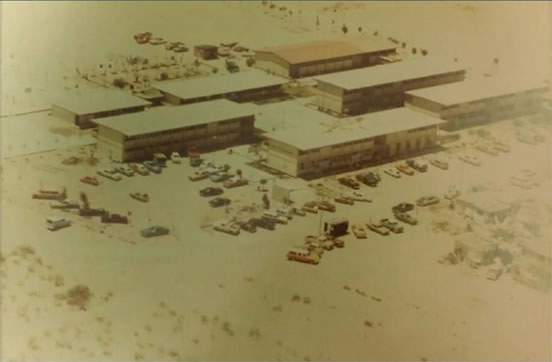
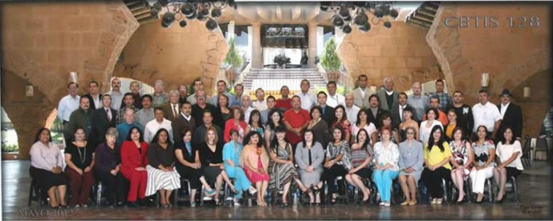
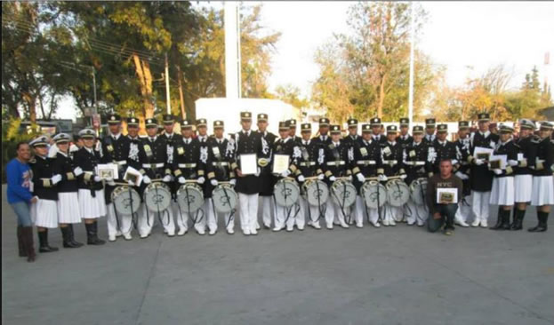
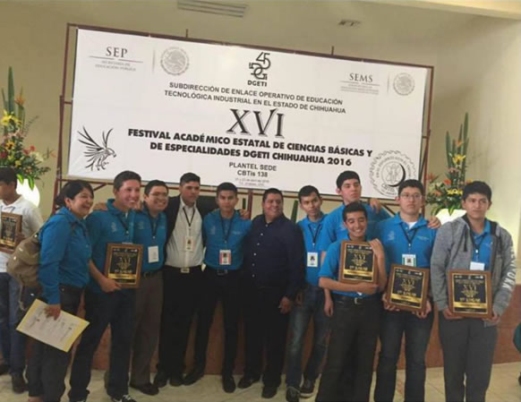

Ser el medio fundamental para Adquirir, Transmitir y Acreditar la Cultura Tecnológica, formando Bachilleres Técnicos con un alto Nivel Académico y Tecnológico, preparados para responder a las necesidades del Desarrollo Estatal, a la preservación de nuestros recursos naturales, a la producción, y el desarrollo de bienes y servicios, en una estrecha Vinculación con el Sector Productivo, Educativo, Gubernamental y Social.
Ser un sistema Educativo de Excelencia, en los ámbitos Académicos, Tecnológicos y de Investigación, que satisfaga ampliamente los requerimientos de Recursos Humanos del Sector Productivo y de la Sociedad en el Estado de Chihuahua.
Satisfacer las necesidades y expectativas de la Sociedad en Educación Media Superior Tecnológica, a través de la formación de Bachilleres y Técnicos Profesionales que fortalezcan y desarrollen una Cultura Tecnológica y una Iinfraestructura Industrial y de Servicios con enfoque hacia la Calidad.
Formar y Desarrollar Integralmente a los Educandos del Sistema de Educación Tecnológica Industrial, en donde se manifieste el Avance y Desarrollo Tecnológico, la Experiencia del Personal Docente, Técnico, Administrativo y Directivo, reforzando los valores que los motiven a la calidad, creatividad y la mejora continua en los procesos institucionales para la satisfacción de nuestros clientes.
Buscar el bien común para Alumnos, Trabajadores Docentes y de Apoyo a la Educación, por encima de los intereses particulares. Con acciones y palabras honestas y dignas de crédibilidad propicia, el beneficio de la institución.
El 16 de Abril de 1971 es publicado en el Diario Oficial de la Federación el acuerdo presidencial por el que se modifica la estructura orgánica administrativa de la SEP y se da paso a la creación de la Dirección General de Educación Tecnológica Industrial, como una dependencia adscrita a la Subsecretaría de Educación Media Superior (SEMS), dependiendo de la Secretaría de Educación Pública (SEP) que ofrece el servicio educativo del nivel medio superior tecnológico, en Agosto de ese mismo año se publican las funciones que tendrá esta institución y se integran a ella los centros de capacitación para el trabajo industrial, escuelas tecnológicas industriales, los centros de estudios tecnológicos en el Distrito Federal y los centros de estudios tecnológicos foráneos.

Actualmente en su 45 Aniversario la DGETI es la Institución de educación media superior más grande del país, con una infraestructura física de 456 planteles educativos a nivel nacional, de los cuales 168 son CETis y 288 CBTis.
De este Sistema Educativo (DGETI), nace el 1 de Septiembre de 1979, el CENTRO DE BACHILLERATO TECNOLÓGICO industrial y de servicios No. 128, iniciando actividades con el nombre de CECYT 432 en las instalaciones de la Secundaria Técnica #15 ubicada en la calle Cerro de la Plata y calle Q, teniendo como principal objetivo formar técnicos profesionales capaces de integrarse a laborar en la industria maquiladora. Ofertando en sus inicios las carreras técnicas de Alimentos, Aire Acondicionado y Refrigeración, Electrónica y Gericultura, contando con una plantilla de 51 empleados: 28 docentes, 19 administrativo y 4 en servicios generales: personal a cargo del Ing. Rosalio Morales Castro en el cargo de director del plantel y como subdirector del plantel el Lic. Guillermo Juárez Lozoya, los cuales atendieron a 480 alumnos en su primera generación. Mudándose el 15 de Febrero de 1980 a sus instalaciones propias, ubicadas en la calle Nueva Zelanda y Mora #7870 en el Fraccionamiento Oasis, ofertando las carreras técnicas de Aire Acondicionado y Refrigeración, Electrónica, Administración, Gericultura y Alimentos.
Durante los 37 años desde su fundación el plantel ha estado a cargo de los directores: Ing. Salvador de León Anzures, Ing. Adolfo Gándara Rivera, Ing. Humberto Domínguez Rascón, Ing. Rosa Manuela Herrera, Ing. Francisco Gerardo Carrillo Castañeda, Lic. Norma Alicia Medina Rivas y el M.A. Francisco Javier García Valles.
En la actualidad el plantel cuenta con una plantilla de 123 empleados: 75 docentes, 48 administrativos y personal en servicios generales, atendiendo a una población escolar de 2881 alumnos distribuidos en dos turnos, ofertando las especialidades de Laboratorista químico, Gericultura, Administración de Recursos Humanos, Programación, Soporte y Mantenimiento de Equipo de Cómputo, Refrigeración y Climatización, Electrónica; convirtiéndose así, en una de las más grandes del Estado y del subsistema DGETI.

A lo largo de estos 37 años los alumnos de las diferentes generaciones han obtenido importantes lugares en actividades deportivas, académicas, culturales y tecnológicas de las que se mencionan entre muchas:
Los más de 50 primeros lugares obtenidos por la banda de guerra y escolta del plantel en concursos locales, estatales y nacionales, Primer Lugar Nacional tanto en la Federación Mexicana de Bandas de Guerra (FEMEXBAM) como en la Organización Nacional 3 de Diana, así como también el Primer Lugar en el Concurso Nacional DGETI 2015 con sede en Veracruz.

Por su parte los grupos culturales Rondalla, Mariachi, Danza, Grupo latinoamericano, Pintura, Fotografía, Artesanías, Canto tradicional, Ajedrez, Teatro, Declamación y Poesía han obtenido diversos primeros lugares en el Concurso Estatal DGETI,sobresaliendo la participación del Mariachi y el grupo de Danza del plantel en el Festival Internacional de Danza llevado a cabo en Palma de Mallorca España.
Mientras tanto, en el área deportiva a lo largo de este tiempo, los equipos representativos del plantel de futbol soccer, basquetbol, volibol, atletismo, en su modalidad varonil y femenil, así como el equipo de beisbol han obtenido en distintas ocasiones el primer lugar en el Encuentro Estatal Deportivo DGETI. Destacando el Primer lugar obtenido por el equipo de futbol soccer varonil en el torneo organizado por El Club de futbol Pachuca.
En el área académica y tecnológica se han obtenido en varias ocasiones primeros lugares a nivel nacional, en el Encuentro académico DGETI en las áreas de física, química, biología y matemáticas, programación y electrónica, así como en el desarrollo de prototipos tecnológicos participando en el Concurso Nacional de Prototipos.
Además de la educación académica, cultural, tecnológica y deportiva, es muy importante para la Institución que los alumnos aumenten sus habilidades socioemocionales, lo que les permitirá desenvolverse de manera sana tanto emocional como laboral en la esfera social, de este concepto se desprenden programas internos de la Institución como lo son el Jaguartón, Talleres de ciencia y tecnología, Escuela segura y saludable, Festival del adulto mayor, Festival del día del niño y navidad (dirigido a niños de escasos recursos). Destaca el proyecto Herramientas para el auto-empleo que ganó en el Concurso convocado por IMJUVE en el 2015.
Todos estos logros junto con los resultados de la prueba PLANEA de los últimos años, han consolidado a nuestra Institución Educativa como uno de las 10 mejores planteles educativos del país.
Hoy en día nos sentimos orgullosos de día con día cumplir con el objetivo original de la creación de nuestro plantel, al entregar a la sociedad jovenes que han destacado como ingenieros, doctores, docentes, directivos, licenciados, deportistas, artistas, periodistas, arquitectos, padres de familia, comprometidos con la sociedad juarense.
“Por esto y mucho más seguiremos Alcanzando el mañana con nuestra propia tecnología“
